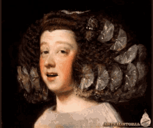
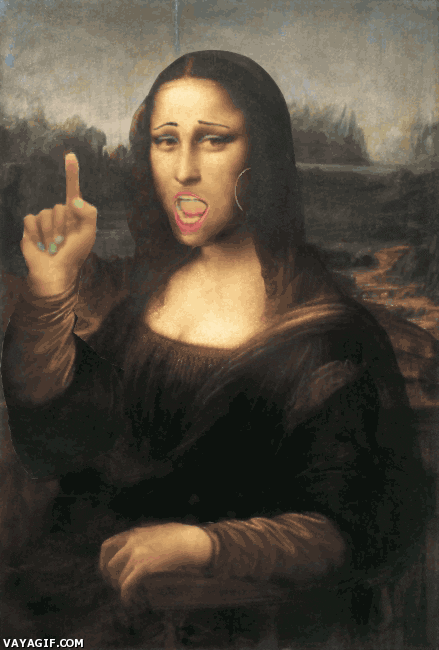

¿Qué es el Barroco?
Movimiento cultural y artístico que surgió en Europa y las colonias americanas, como al periodo histórico-cultural en que se desarrollo dicho movimiento.
En este periodo los artistas cargaban con una energia la cual la representaban en arte, la literatura destacaba ya que describia la religion y persecucion de los sueños

Origen
Surge en una época donde existían muchas tensiones entre países católicos y protestantes, entre las monarquías parlamentarias y las absolutistas. Se desarrolla en Europa Occidental y en algunas de sus colonias de América, especialmente Latinoamérica, constituyendo el escalón entre el manierismo y rococó.

Características
Nace el sentido del movimiento
Surgen los constraste entre luces y sombras
Búsqueda de lo espiritual, de las pasiones y sensaciones internas.
El arte refleja el gusto por lo extravagante y lo elegante.

Etapas
Este período suele dividirse en tres momentos distintos:
Primitivo (1580 a 1630)
Pleno (1630 a 1680)
Tardío (1680 a 1750)
Contexto historico
El arte Barroco se desarrolló durante los siglos XVII y XVIII, y tuvo su origen en Italia, concretamente en Roma. La influencia romana se expandió por los países católicos como España, así como Nápoles y Flandes, que estaban bajo su dominio.
En Francia el Barroco tuvo unas formas más académicas y fue un instrumento de propaganda de la monarquía, el Barroco fue muy diferente en los países protestantes, como Holanda, con una pintura más intimista y burguesa.
Inglaterra no desarrolló el Barroco hasta el siglo XVIII.